Jardinagem
A jardinagem é uma mecânica em Barotrauma que permite aos submarinistas cultivar recursos renováveis a partir da segurança de seu submarino. Existem cinco plantas cultiváveis diferentes que produzem frutas especiais que podem ser transformadas em diferentes itens ou usadas ofensivamente em alguns casos. As sementes podem ser compradas nos comerciantes da cidade e do posto avançado de pesquisa, saqueadas em naufrágios ou desconstruindo frutas.
Método
Para iniciar um jardim, primeiro coloque uma 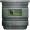 Caixa Pequena para Plantar dentro do submarino e, em seguida, use a semente da planta desejada na Caixa para plantá-la. A semente consome água com o tempo e faz crescer vinhas na parede.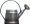 Um regador é usado para reabastecer a caixa da plantadeira com água doce. As caixas plantadoras em contato com a água do mar terão seu abastecimento de água doce drenado. Quando totalmente crescida, a planta deixa cair frutos das flores nas videiras. Se acabar a água doce da Caixa de Plantação, a planta morrerá. As plantas mortas podem ser arrancadas manualmente, permitindo que a caixa do plantador seja replantada ou totalmente removida.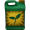 O fertilizante pode ser usado na Caixa Plantadora para dobrar a velocidade de crescimento e a taxa de produção de frutos da planta em seu interior.
Plantas
| Semente | Tempo de crescimento | Fruta produzida | Taxa de Spawn |
|---|---|---|---|
| 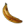 Banana |
39 minutos | Banana | 2.02 / hora |
| 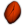 Semente de Granaranja |
57 minutos | 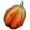Granaranja(95%) 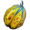Granaranja Mutante(5%) |
7.92 / hora |
 Semente de Mata Raptor |
1 hora, 32 minutos | 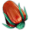Mata Raptor(40%) Mata Raptor Mutante(60%) Mata Raptor Mutante(60%)
|
7.92 / hora |
| 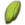 Vinha de Sal |
39 minutos | 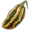Bulbo de Sal | 2.02 / hora |
Semente de Videira de Tabaco |
2 horas, 3 minutos | 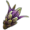Tabaco | 2.02 / hora |